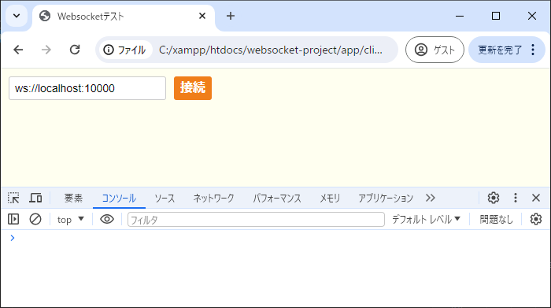
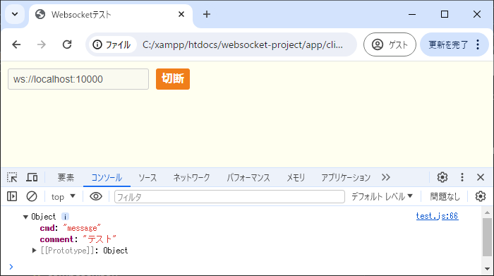
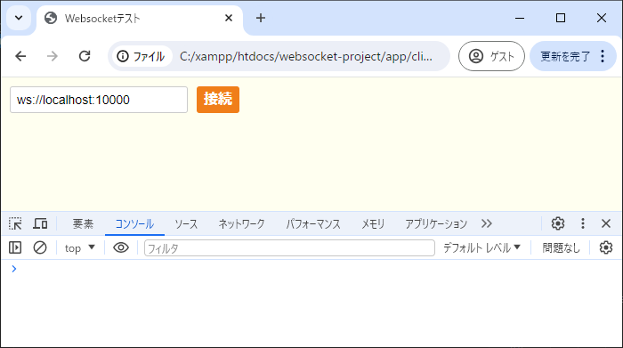
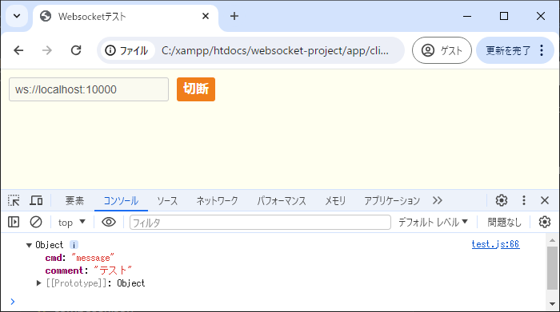

【Websocketサーバー開発環境】
はじめに
この環境はデモ版のWebsocketサーバーからコマンド部を含めWebsocketに不要な部分を取り除いて再構築したものです。
プロトコルの主要な部分は実装済みなので、コマンド部を自分で作成しながらブラウザを使って動作確認できますので、新規でプロジェクトを起こす場合に比べてソケット通信初心者向けの環境と言えます。
以降ではインストール方法と実装例を見ながら進めていきます。
プロトコルの主要な部分は実装済みなので、コマンド部を自分で作成しながらブラウザを使って動作確認できますので、新規でプロジェクトを起こす場合に比べてソケット通信初心者向けの環境と言えます。
以降ではインストール方法と実装例を見ながら進めていきます。
インストール
以下のコマンドでインストールできます。
※GitHubから直接ダウンロードする場合は>> こちらからどうぞ。
それでは上記でインストールしたプロジェクトルートに移動して
ご覧のように
これを以下のように実行する事でサーバーを起動できます。
※コマンドの詳しい使い方は▶新規開発環境のページでご紹介しています。
※GitHubから直接ダウンロードする場合は>> こちらからどうぞ。
> composer create-project socket-manager/websocket-project <インストール先のディレクトリ名>
それでは上記でインストールしたプロジェクトルートに移動して
php workerコマンドを実行してみます。
> php worker
SOCKET-MANAGER Framework 1.0.0
Usage:
command [arguments]
main
app:websocket-server Websocketサーバー
craft
craft:init <初期化クラス名> 初期化クラスの生成
craft:parameter <UNITパラメータクラス名> UNITパラメータクラスの生成
craft:protocol <プロトコルUNIT定義のクラス名> プロトコルUNIT定義のクラスとステータス名Enumの生成
craft:command <コマンドUNIT定義のクラス名> コマンドUNIT定義のクラスとキュー／ステータス名Enumの生成
craft:main <メイン処理のクラス名> メイン処理クラスの生成
craft:setting <設定ファイル名> 設定ファイルの生成
craft:locale <メッセージファイル名> メッセージファイルの生成
ご覧のように
app:websocket-serverが含まれている事が確認できます。これを以下のように実行する事でサーバーを起動できます。
> php worker app:websocket-server [<ポート番号>]
※コマンドの詳しい使い方は▶新規開発環境のページでご紹介しています。
実装例
ここではコマンド部のチャットメッセージを実装してみます。
それでは
以下の黄色の部分が今回追加したソースです。
上記のようにコマンド名は
そして以下のように
以下の黄色の部分が今回追加したソースです。
次に
以下の黄色の部分が今回追加したソースです。
追加したポイントは以下の通り。
※引数の
※ここで扱っている
クライアントの実装
このプロジェクトではclientディレクトリに検証用として最低限の実装でファイルを同梱しています。それでは
clientディレクトリ内のtest.jsを編集します。test.js内には以下のようにonopenメソッドがあるのでここに処理を入れます。以下の黄色の部分が今回追加したソースです。
// Websocket接続
websocket = new WebSocket(uri);
/**
* 接続完了イベント
*
* @param {*} event イベントインスタンス
* @returns
*/
websocket.onopen = function(event)
{
let data =
{
'cmd': 'message'
, 'comment': 'テスト'
};
websocket.send(JSON.stringify(data));
};
onopenメソッドはWebsocketの接続が確立した時に呼び出されるイベントです。上記のようにコマンド名は
message、送信コメントはテストにしてJSONデータを送信する処理を入れています。そして以下のように
onmessageメソッドで受信したデータを受け取れますので受信したデータはコンソールに表示されるようになっています。
/**
* データ受信イベント
*
* @param {*} event イベントインスタンス
* @returns
*/
websocket.onmessage = function(event)
{
let data = JSON.parse(event.data);
console.dir(data);
};
サーバーの実装
まずはCommandForWebsocketQueueEnum.phpのファイルに今回追加するコマンド名を定義します。以下の黄色の部分が今回追加したソースです。
<?php
/**
* コマンド部のキュー名のENUMファイル
*
* Websocket用
*/
namespace App\CommandUnits;
/**
* コマンド部のキュー名定義
*
* Websocket用
*/
enum CommandForWebsocketQueueEnum: string
{
case MESSAGE = 'message';
}
次に
CommandForWebsocket.phpを編集します。以下の黄色の部分が今回追加したソースです。
class CommandForWebsocket implements IEntryUnits
{
/**
* @var const QUEUE_LIST キュー名のリスト
*/
protected const QUEUE_LIST = [
CommandForWebsocketQueueEnum::MESSAGE->value,
];
/**
* キューリストの取得
*
* @return array キュー名のリスト
*/
public function getQueueList(): array
{
return (array)static::QUEUE_LIST;
}
/**
* ステータスUNITリストの取得
*
* @param string $p_que キュー名
* @return array キュー名に対応するUNITリスト
*/
public function getUnitList(string $p_que): array
{
$ret = [];
if($p_que === CommandForWebsocketQueueEnum::MESSAGE->value)
{
$ret[] = [
'status' => CommandForWebsocketStatusEnum::START->value,
'unit' => $this->getMessageStart()
];
}
return $ret;
}
protected function getMessageStart()
{
return function(ParameterForWebsocket $p_param): ?string
{
$p_param->logWriter('debug', ['COMMAND:MESSAGE' => 'START']);
$w_ret = $p_param->getRecvData();
$msg = $w_ret['data'];
$data =
[
'data' => $msg
];
$p_param->setSendStackAll($data);
return null;
};
}
}
追加したポイントは以下の通り。
- ■QUEUE_LISTへEnum値を追加
MESSAGEというキュー名を追加- ■getUnitListメソッドの実装
MESSAGEコマンドに対応するUNIT（メソッド）処理を登録- ■getMessageStartメソッドの実装（※）
- 受信したデータを配信する処理を実装（上記ソース内のlogWriterメソッドでログ出力できます）
setSendStackAllメソッドを使ってデータを送信する時、データ構造にdataというキーを噛ませていますが、これはWebsocketの切断フレームの仕様が特殊なため敢えてこのような構造にしています。コマンド部でデータを送受信する時はdataキーを噛ませる事で切断フレームを含めたデータ構造を一律に保つようにしています。※引数の
ParameterForWebsocketクラスはSocketManagerParameterクラスを継承しています。詳しくはSocketManagerParameterクラスの>> Referenceをご覧ください。※ここで扱っている
CommandForWebsocketというクラスは広義の意味でコマンド部に分類される処理でコマンドUNITクラスと言います。コマンドUNITクラスの基本的な実装方法は▶コマンドUNITクラスのページをご覧ください。動作確認
以下のコマンドを実行してサーバーを10000ポートで起動します。
次にクライアントをブラウザで開きます。

この状態で接続ボタンをクリックすると以下のようにコンソール画面でメッセージコマンドが返ってきている事が確認できます。

そしてさらにブラウザをもう一つ開いて同じ操作をすると二つのブラウザウインドウに同じメッセージが配信されている事が確認できますので色々と試してみてください。
> php worker app:websocket-server 10000
次にクライアントをブラウザで開きます。
client/test.htmlをブラウザへドラッグ＆ドロップした上でF12を押して以下の画面を開いてください。
この状態で接続ボタンをクリックすると以下のようにコンソール画面でメッセージコマンドが返ってきている事が確認できます。

そしてさらにブラウザをもう一つ開いて同じ操作をすると二つのブラウザウインドウに同じメッセージが配信されている事が確認できますので色々と試してみてください。
ログ出力について
以下のディレクトリ構成でログファイルが出力されます。
ファイルの命名規則は次の通り。
/logs
/socket-manager-log Websocketサーバーのログ
ファイルの命名規則は次の通り。
- ■Websocketサーバーのログ
- <日付文字列（"Ymd"形式）>_W<ポート番号>.log
おわりに
コマンドUNITの処理は上記で実装したように以下の流れが基本となります。
（▶アーキテクチャを理解しておいた方がより高度な実装が可能になります）
自作のプロトコルを実装する必要がある場合は▶新規開発環境をご利用ください。
ホスト名やポート番号等の設定ファイルの詳細は▶デモの設定ファイルのページでまとめています。
- １．受信データの取得
- getRecvDataメソッドで取得
- ２．送信データの作成
- シリアライズ前のデータを作成する
- ３．送信データの設定
- setSendStack、setSendStackAllメソッドで設定
（▶アーキテクチャを理解しておいた方がより高度な実装が可能になります）
自作のプロトコルを実装する必要がある場合は▶新規開発環境をご利用ください。
ホスト名やポート番号等の設定ファイルの詳細は▶デモの設定ファイルのページでまとめています。